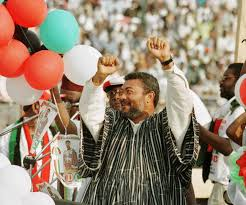
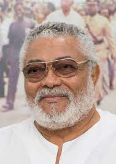
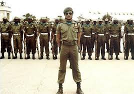
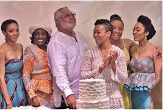
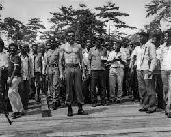
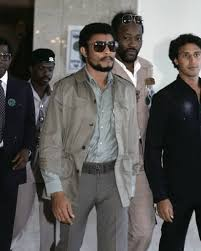
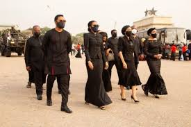

Jerry John Rawlings was a Ghanaian military officer, aviator and politician who led the country for a brief period in 1979, and then from 1981 to 2001. He led a military junta until 1992, and then served two terms as the democratically elected president of Ghana.
 Rawlings finished his secondary education at Achimota College in 1967.[14] He joined the Ghana Air Force shortly afterwards; on his application, the military switched his surname John and his middle name Rawlings.[15] In March 1968, he was posted to Takoradi, in Ghana's Western Region, to continue his studies. He graduated in January 1969, and was commissioned as a pilot officer, winning the coveted "Speed Bird Trophy" as the best cadet in flying the Su-7 ground attack supersonic jet aircraft as he was skilled in aerobatics. He earned the rank of flight lieutenant in April 1978. During his service with the Ghana Air Force, Rawlings perceived a deterioration in discipline and morale due to corruption in the Supreme Military Council (SMC). As promotion brought him into contact with the privileged classes and their social values, his view of the injustices in society hardened. He was thus regarded with some unease by the SMC. After the 1979 coup, he involved himself with the student community of the University of Ghana, where he developed a more leftist ideology through reading and discussion of social and political ideas.
Rawlings was married to Nana Konadu Agyeman, whom he met while at Achimota College. They had three daughters: Zanetor Rawlings, Yaa Asantewaa Rawlings, Amina Rawlings; and one son, Kimathi Rawlings. Junior Agogo was the nephew of Rawlings.
The two major contenders of the 1996 election were Rawlings' NDC, and John Kufuor's Great Alliance, an amalgamation of the New Patriotic Party (NPP) and the People's Convention Party (PCP).The Great Alliance based their platform on ousting Rawlings, and attacked the incumbent government for its poor fiscal policies. However, they were unable to articulate a clear positive message of their own, or plans to change the current economic policy. As Ghana was heavily dependent on international aid, local leaders had minimal impact on the economy. The Electoral Commission reported that Rawlings had won by 57%, with Kufuor obtaining 40% of the vote. Results by district were similar to those in 1992, with the opposition winning the Ashanti Region and some constituencies in Eastern and Greater Accra, and Rawlings winning in his ethnic home, the Volta Region, and faring well in every other region.The NDC took 134 seats in the Assembly compared to the opposition's 66, and the NPP took 60 seats in the parliament.
Rawlings came to power in Ghana as a flight lieutenant of the Ghana Air Force following a coup d'état in 1979. Prior to that, he led an unsuccessful coup attempt against the ruling military government on Tuesday,15 May 1979, just five weeks before scheduled democratic elections were due to take place. After handing power over to a civilian government, he took back control of the country on Thursday, 31 December 1981 as the chairman of the Provisional National Defence Council (PNDC).
In 1992, Rawlings resigned from the military, founded the National Democratic Congress (NDC), and became the first president of the Fourth Republic. He was re-elected in 1996 for four more years.After two terms in office, the limit according to the Ghanaian Constitution, Rawlings endorsed his vice-president John Atta Mills as a presidential candidate in 2000. Rawlings served as the African Union envoy to Somalia.
Rawlings established the Economic Recovery Program (ERP) suggested by the World Bank and the International Monetary Fund in 1982 due to the poor state of the economy after 18 months of attempting to govern it through administrative controls and mass mobilization.The policies implemented caused a dramatic currency devaluation, the removal of price controls, and social-service subsidies which favored farmers over urban workers, and privatization of some state-owned enterprises, and restraints on government spending.Funding was provided by bilateral donors, reaching US$800 million in 1987 and 1988, and US$900 million in 1989. Between 1992 and 1996, Rawlings eased control over the judiciary and civil society, allowing a more independent Supreme Court and the publication of independent newspapers. Opposition parties operated outside of parliament and held rallies and press conferences.
Rawlings died on 12 November 2020 at Korle-Bu Teaching Hospital in Accra, a week after having been admitted for a "short term illness" in Ghana. According to some reports, his death was caused by complications from COVID-19.His death came nearly two months after that of his mother, Victoria Agbotui, on 24 September 2020.President Nana Akufo-Addo declared a seven-day period of mourning in his honor and flags flown at half-mast.His family members appealed to the Government of Ghana to bury him in Keta in the Volta Region.[50] A schedule for the signing of a book of condolence was opened in his memory.His funeral, originally planned for 23 December 2020, was postponed at the request of his family
